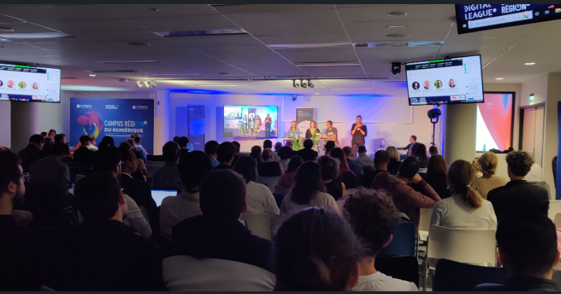
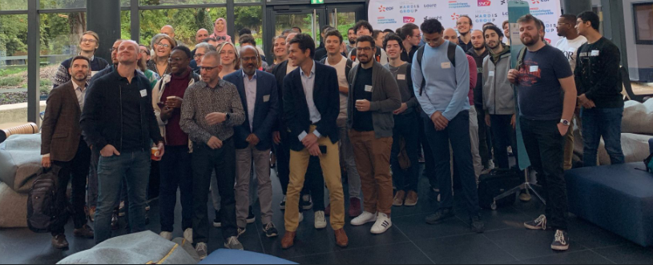

Keysard
Jeu crée sous UNITY par une équipe de 6 personnes pendant une période de 2 mois.
Détails du projet :
Le jeu est un dactylographie roguelike. Le joueur incarne un sorcier en vue de dessus et doit se déplacer de salles en salles dans un donjon .
Dans ces dernières des ennemis sont présent pour lui barrer la route, le joueur peut se défendre en lançant des sorts.
Pour ce faire il doit taper le nom des sorts sur son clavier pour les lancer et éliminer les ennemis. Plusieurs sorts sont disponibles et le joueur pourra en avoir qu'une partie lors de sa partie, l'encouragant à en lancer plusieurs.
Dans ces dernières des ennemis sont présent pour lui barrer la route, le joueur peut se défendre en lançant des sorts.
Pour ce faire il doit taper le nom des sorts sur son clavier pour les lancer et éliminer les ennemis. Plusieurs sorts sont disponibles et le joueur pourra en avoir qu'une partie lors de sa partie, l'encouragant à en lancer plusieurs.
Contexte
Ce projet s'inscrit dans le parcours de mon master AMINJ. On devait créer un jeu vidéo innovant à un niveau de finition proche d'une game jam.
Réalisé en grande équipe, le projet nous a également permis de mettre en pratique la répartition des tâches et la collaboration entre les différents membres.
Une réunion à mi-parcours avec le responsable nous a permis de présenter l'avancement du projet et d'intégrer ses retours avant la livraison finale.
Réalisé en grande équipe, le projet nous a également permis de mettre en pratique la répartition des tâches et la collaboration entre les différents membres.
Une réunion à mi-parcours avec le responsable nous a permis de présenter l'avancement du projet et d'intégrer ses retours avant la livraison finale.
Mon rôle
Création de l'artwork de l'écran titre du jeu ainsi que des sprites non utilisées.
Technologies utilisées et outils utilisées
Piskel : Logiciel de création pixel art en ligne.
Gallerie d'image

Le jury et la salle de présentation : Chaque groupe allait sur la scène et pouvait présenter leurs projets en s'aidant du video-porjecteur.
La photo finale : A la fin de cette journée, il y a eu une photo finale avec tous les participants et les professionnels. Conclusion
Projet intéressant me permettant de créer des artworks et faire du pixel art poussée.
Une expérience intéressante que je pourrais refaire à l'avenir.
La gestion, la distribution et la communication entre les différentes équipes est plus complexes qu'il n'y paraît.
La gestion, la distribution et la communication entre les différentes équipes est plus complexes qu'il n'y paraît.